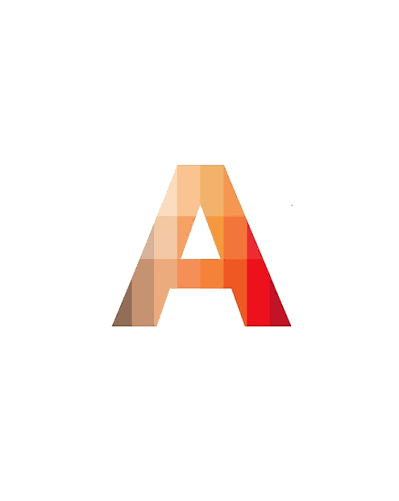

Software Integration Developer
Appleby North Paint Inc. — Riipen Level UP Project
January 2026 – March 2026 | Remote
Developed a Python-based data integration and automation workflow for Appleby North Paint, a Burlington-based paint and decorating retailer. The project focused on consolidating product, pricing, and inventory information from Shopify and Decor Fusion into structured, usable datasets.
The original project explored integration between QuickBooks and Decor Fusion. The completed implementation focused on export-based data processing, validation, and inventory feed generation.
- Developed a Python 3 data-processing application using pandas and openpyxl to consolidate three Excel datasets and generate structured product and inventory feeds covering 206 unique SKUs.
- Implemented SKU-based matching between Shopify products and Decor Fusion records, matching 154 products to pricing data and identifying 52 unmatched SKUs for investigation.
- Built conditional inventory logic using stock quantities to classify 63 products as in stock, 132 as out of stock, and 11 as preorder.
- Generated two TSV feeds formatted for a Google Merchant Center inventory workflow, alongside CSV diagnostic reports identifying 146 pricing discrepancies.
- Implemented parsing logic for irregular Excel worksheets containing merged cells and addressed text-encoding and Python dependency issues encountered during processing.
- Prepared technical documentation covering data mappings, processing results, unresolved integration gaps, troubleshooting procedures, and recommended next steps.